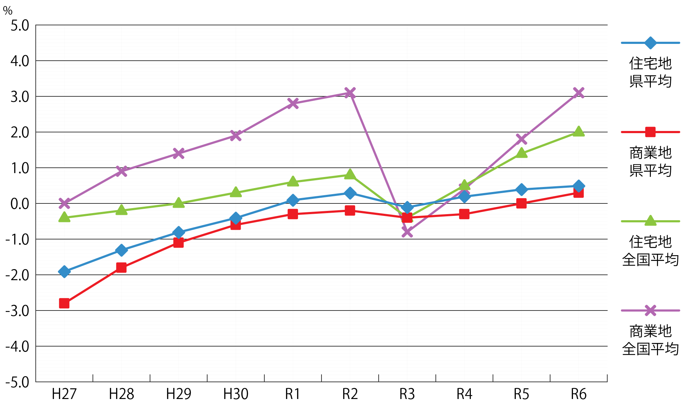
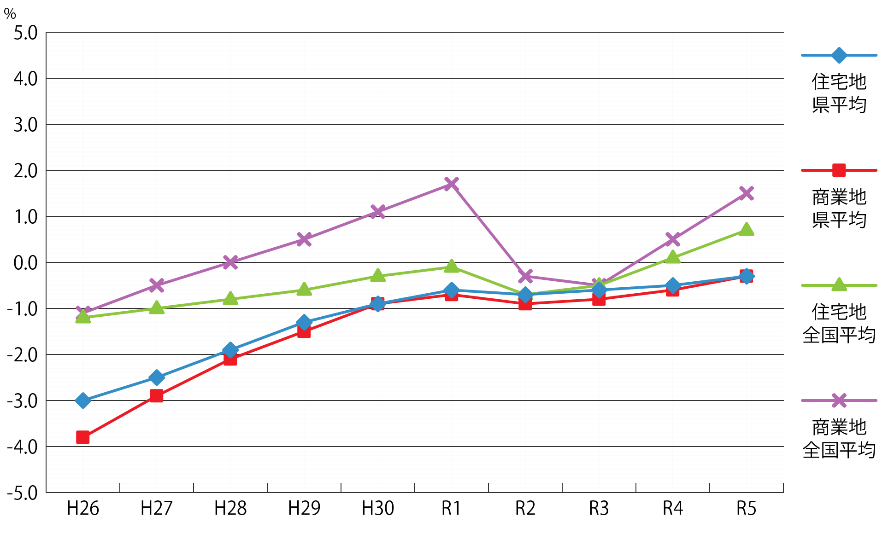

地価公示・地価調査

一般の土地取引の基準や目安となるほか、
道路や公園等の公共用地の取得価格を算定する際にも活用されています。
地価公示（対前年変動率%）
| 年 | H27 | H28 | H29 | H30 | R1 | R2 | R3 | R4 | R5 | R6 |
|---|---|---|---|---|---|---|---|---|---|---|
| 住宅地 県平均 |
-1.9 | -1.3 | -0.8 | -0.4 | 0.1 | 0.3 | -0.1 | 0.2 | 0.4 | 0.5 |
| 商業地 県平均 |
-2.8 | -1.8 | -1.1 | -0.6 | -0.3 | -0.2 | -0.4 | -0.3 | 0.0 | 0.3 |
| 住宅地 全国平均 |
-0.4 | -0.2 | 0.0 | 0.3 | 0.6 | 0.8 | -0.4 | 0.5 | 1.4 | 2.0 |
| 商業地 全国平均 |
0.0 | 0.9 | 1.4 | 1.9 | 2.8 | 3.1 | -0.8 | 0.4 | 1.8 | 3.1 |

県内の平均変動率について、住宅地は3年連続で上昇した。商業地は前年の横ばいから上昇に転じた。
住宅地では10市町が上昇した一方で6市町が下落した。
商業地では9市町が上昇した一方で7市町で下落した。
全国平均では、全用途平均・住宅地・商業地のいずれも3年連続で上昇し、山口県の平均変動率の全国順位は住宅地が22位、商業地が24位であった。
令和６年地価公示についてはこちら
（国土交通省ホームページ）
令和６年地価公示（山口県分）についてはこちら
（山口県ホームページ）
地価調査（対前年変動率%）
| 年 | H26 | H27 | H28 | H29 | H30 | R1 | R2 | R3 | R4 | R5 |
|---|---|---|---|---|---|---|---|---|---|---|
| 住宅地 県平均 |
-3.0 | -2.5 | -1.9 | -1.3 | -0.9 | -0.6 | -0.7 | -0.6 | -0.5 | -0.3 |
| 商業地 県平均 |
-3.8 | -2.9 | -2.1 | -1.5 | -0.9 | -0.7 | -0.9 | -0.8 | -0.6 | -0.3 |
| 住宅地 全国平均 |
-1.2 | -1.0 | -0.8 | -0.6 | -0.3 | -0.1 | -0.7 | -0.5 | 0.1 | 0.7 |
| 商業地 全国平均 |
-1.1 | -0.5 | 0.0 | 0.5 | 1.1 | 1.7 | -0.3 | -0.5 | 0.5 | 1.5 |

県内の平均変動率について、住宅地にあっては平成11年以降25年連続、商業地にあっては平成6年以降30年連続の下落であるが、下落率が縮小した。
住宅地では、下松市が6年連続、和木町が5年連続、宇部市が3年連続で上昇した。
商業地では、防府市が4年連続、山口市が3年連続、下松市が2年連続で上昇した。
全国平均については、住宅地・商業地いずれも前年と同じく上昇基調が続いた。山口県の平均変動率の全国順位は住宅地で22位、商業地で27位であった。
都道府県地価調査についてはこちら
（国土交通省ホームページ）
山口県地価調査についてはこちら
（山口県ホームページ）
路線価図
路線価図等についてはこちら
（国税庁ホームページ）